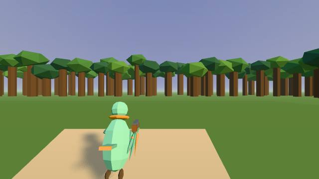
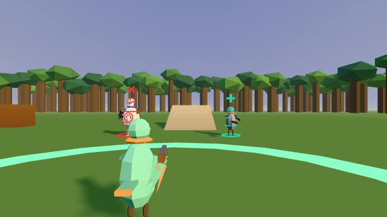
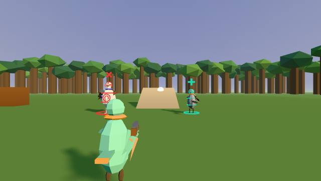
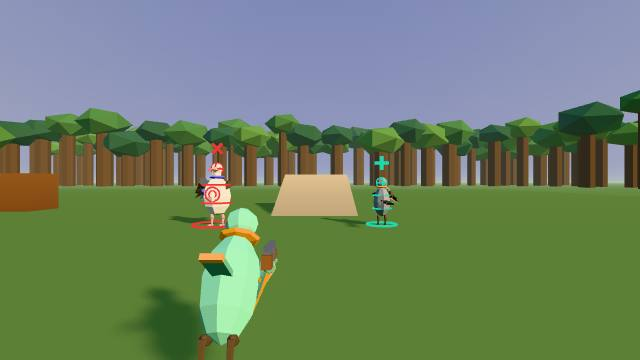

Swift Playable
Mobility skirmisher · Playable since Stage 4
Appearance: a living boomerang: tiny body, very long sickle-shaped wings swept back past the tail (3 m span, held half-open), deeply forked tail. Sooty brown-black with a pale throat. Reads as "crescent blade" from every angle.
How to play
Skirmishers live on movement. Dash in, trade a few shots or hits, and dash out. Use the lanes' Updrafts and rooftops to keep the initiative.
Swift fights with the Sickle SMG, which hits instantly. Damage drops off between 10 m and 24 m, and head hits are beak shots worth ×1.65. Every level above 1 is a Molt: +29 max HP per level; +3% gun damage of base per level; +1 Song power per level; +3 melee damage per level.
Abilities
Four abilities. Slots 1 to 3 unlock at level 1, the ultimate at level 6. Each can be upgraded three times, for 1, 2, 5 AP, in order; see Ability Points. The shortest cooldown in the kit is Slipstream at 9 s.

1. Slipstream
Dash 16 m in 0.35 s along your aim (up to 45 degrees upward), on the ground or in the air. Two charges.
- Tier 1 · 1 AP+1 charge (3 charges) +1 charge
- Tier 2 · 2 AP-2 s cooldown cooldown -2 s
- Tier 3 · 5 APEnemies you pass through take 50 + 0.5 x SP Song damage pass +50

2. Screaming Party
For 4 s, enemies within 6 m of you take 25 + 0.25 x SP Song damage a second and are slowed 15%, and you move 20% faster.
- Tier 1 · 1 AP+2 s duration (6 s) duration +2
- Tier 2 · 2 AP+3 m radius (9 m) range +3 m, radius +3
- Tier 3 · 5 APEnemies inside also lose 25% fire rate

3. Wing Scythe
Throw a blade 25 m at 40 m/s; it returns to you, piercing. It deals 70 + 0.7 x SP Song damage on each pass and slows 25% for 1.5 s.
- Tier 1 · 1 AP+25 damage (95 + 0.7 x SP) damage +25
- Tier 2 · 2 AP-3 s cooldown cooldown -3 s
- Tier 3 · 5 APThe return pass also stuns for 0.5 s stun +0.5

4. Sky Stitch
Free flight for 6 s (12 m/s in any direction, up to 25 m above the ground). Your gun works and deals +20% damage.
- Tier 1 · 1 AP+2 s duration (8 s) duration +2
- Tier 2 · 2 AP+20% fire rate during flight
- Tier 3 · 5 APWhen it ends, slam the ground below: 5 m radius, 120 + 1.0 x SP Song damage slam +1
Since Stage 4. See all heroes.